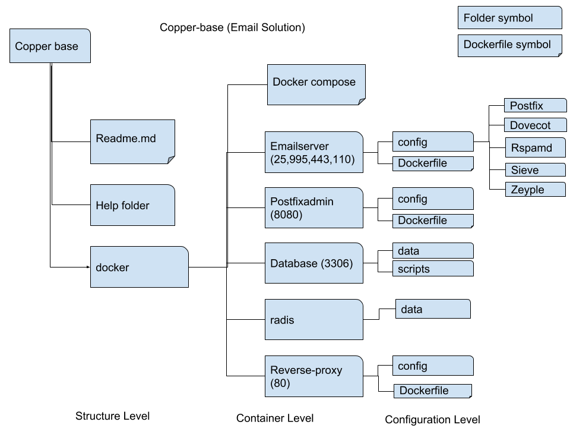

This email solution is under development to make email server implementation
is so simple, secured and with following advantages.
1. Common controll architecture for all deployments.
2. Security Key management functions
3. Centralized Monitoring facility
4. LDAP introgration factility

Basic architecture is completed now it includes following componenets.
1. Postfix
2. Dovecot
3. Rspamd
4. Postfixadmin
5. Rainloop
Other included componenets to the copperbase solution
1. sieve
2. zeyple
Services to be intrograted with the copperbase
1. ldap